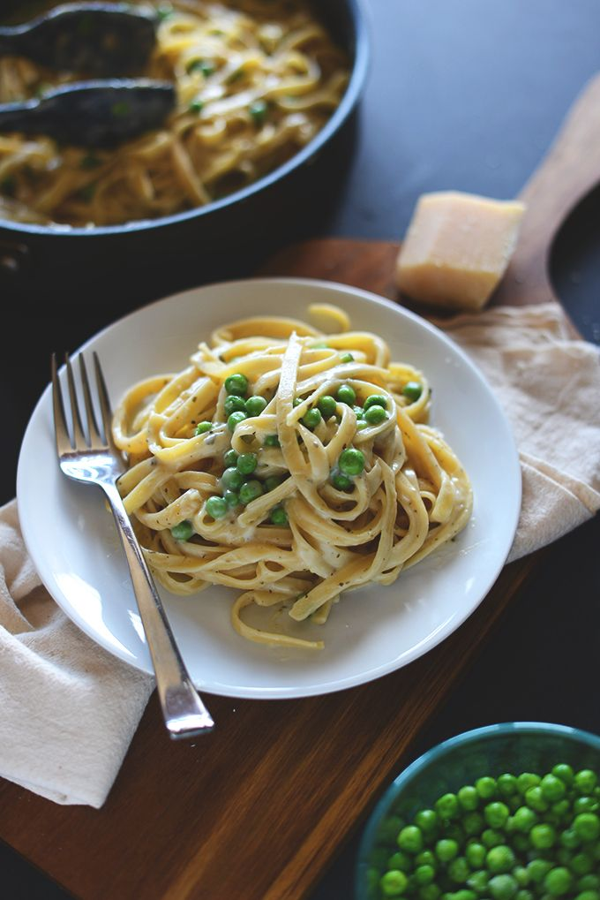
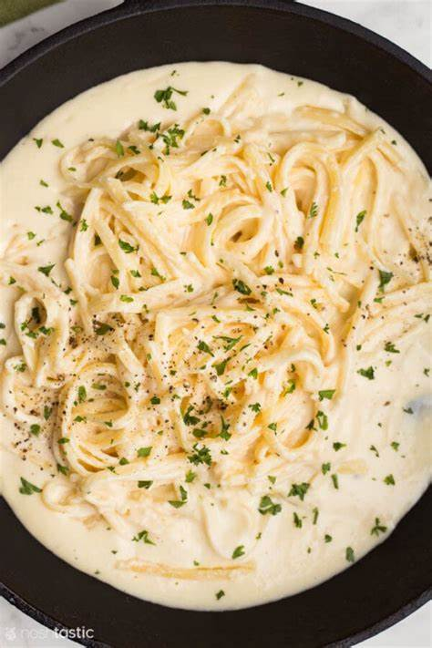
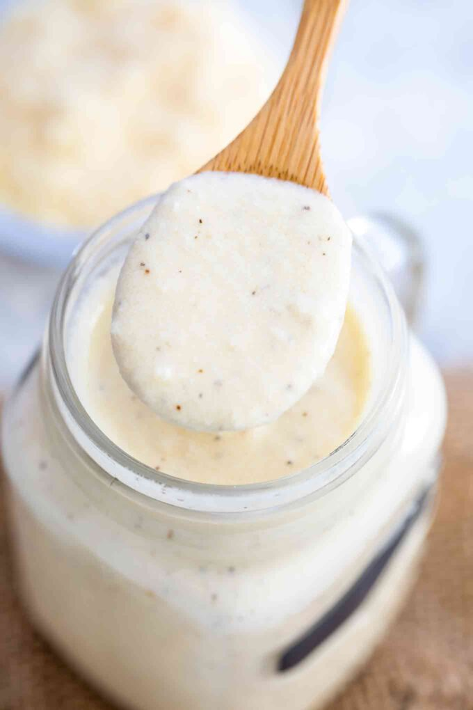

Alfredo Sauce
This Alfredo sauce recipe always turns out rich, creamy and cheesy! A delicious way to transform plain fettuccine pasta or steamed vegetables.
About Alfredo Sauce
Alfredo sauce is a white sauce which is often used to accompany pasta dishes. Traditionally, it was made with butter and Parmesan cheese, but more modernly, and especially in the United States, this sauce also includes heavy cream. In many parts of the world, it is prepared separately from the pasta, and it is sometimes also available for sale in jars at stores.
In Italy, the country where the sauce originated from, Alfredo sauce is not made separately from the pasta. Instead, the ingredients are added to the pasta individually and the whole mixture is tossed to coat the pasta. Both methods are perfectly acceptable, and you can find directions below detailing each technique.
The core ingredients of Alfredo sauce are high quality salted butter, heavy cream, and freshly grated Parmesan. Variants include additions like pepper, nutmeg, and parsley. Outside of Italy, this sauce is often combined with proteins such as chicken, or vegetables.
Ingredients
| S/N | Ingredient | Measurement |
|---|---|---|
| 1 | Butter | 1/4 cup |
| 2 | Garlic (grated or crushed) | 1 clove |
| 3 | Heavy cream | 1 cup |
| 4 | Freshly grated Permesan cheese | 1 1/2 cups |
| 5 | Salt and spice (to taste) | |
| 6 | Grated nutmeg (optional) | a pinch |
| 7 | Chopped fresh parsley | 1/4 cup |
Steps
Methods/ Directions for preparing the versatile Alfredo sauce
- Melt butter in a saucepan over medium low heat. If you're flavoring the sauce with garlic, add it to the melted butter and cook for about 1 minute. Do not let it brown.
- Whisk in the cream and simmer gently for 5 minutes to cook out some of the water from the cream.
- Remove the pan from heat and add cheese a handful at a time, whisking after each addition until the cheese is melted.
- Return the pan to the heat and let the sauce simmer gently for 4 to 5 minutes more until the sauce is thickened. Do not let the sauce boil or else it will separate and lose its smooth texture.
- Season with salt and pepper and add a pinch of freshly grated nutmeg (optional), because nutmeg is heavenly in cream sauce.
- If you're cooking pasta: When your pasta is cooked, drain it well (do not rinse it) and toss it in the pan with the hot Alfredo sauce.
- Garnish with parsley and serve immediately.
Tips:
Do not use pre-grated cheese; it's coated with a substance that inhibits smooth melting and will ruin the texture of your Alfredo sauce.Photos
- 
- 
- 